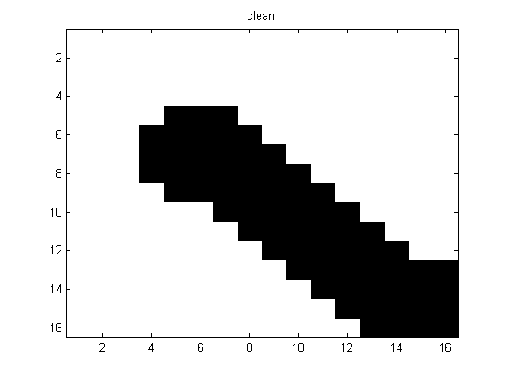
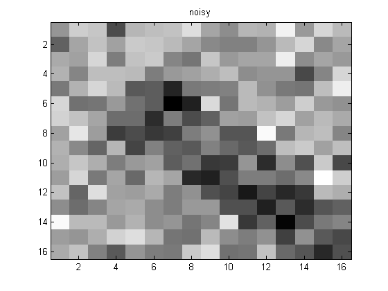
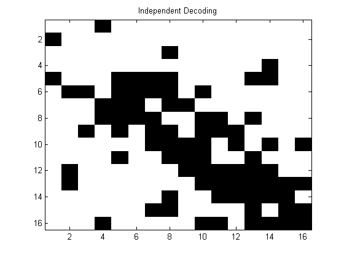
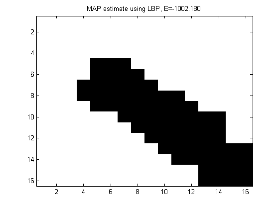

Demonstrate inference in a small 2d grid of a noisy image of an X
Based on http://www.cs.ubc.ca/~schmidtm/Software/UGM/linprog.html
Contents
%PMTKrequireOptimToolbox linprog is called by UGM_Decode_LinProg %PMTKrequireOptimToolbox bintprog is called by UGM_Decode_IntProg % This file is from pmtk3.googlecode.com
Get model and data
We use a small 16x16 subset of the 32x32 image because intprog is slow
setSeed(0); load X.mat % binary image of an 'X' X = X(1:16,1:16); Xclean = X; X = Xclean + 0.5*randn(size(Xclean)); [nRows, nCols] = size(Xclean); figure; imagesc(Xclean); colormap('gray'); title('clean'); printPmtkFigure('mrfImgSmallClean') figure; imagesc(X); colormap('gray'); title('noisy');printPmtkFigure('mrfImgSmallNoisy') 
Independent Decoding
[model] = mrf2MkLatticeX(X, 'dummy', {}); [junk IndDecoding] = max(model.nodePot,[],2); figure; imagesc(reshape(IndDecoding,nRows,nCols)); colormap gray; title('Independent Decoding'); printPmtkFigure('mrfImgSmallIndep')
MAP estimation
methods = {};
methodArgs = {};
methods{end+1} = 'GraphCut';
methodArgs{end+1} = {};
%{
methods{end+1} = 'IntProg';
methodArgs{end+1} = {};
%}
if optimToolboxInstalled
methods{end+1} = 'LinProg';
methodArgs{end+1} = {};
end
methods{end+1} = 'LBP';
methodArgs{end+1} = {'maxIter', 100};
for i=1:length(methods)
method = methods{i};
args = methodArgs{i};
[model] = mrf2MkLatticeX(X, method, args);
zhat = mrf2Map(model);
energy = mrf2Energy(model, zhat);
figure; imagesc(reshape(zhat,nRows,nCols));
colormap gray;
title(sprintf('MAP estimate using %s, E=%5.3f', method, energy));
printPmtkFigure(sprintf('mrfImgEst%s', method))
end
Optimization terminated.